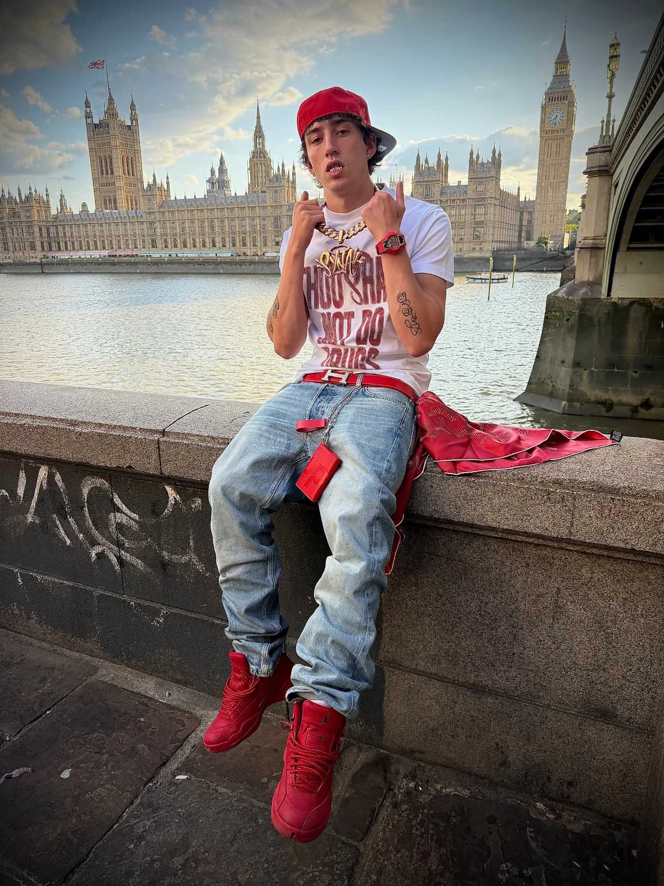
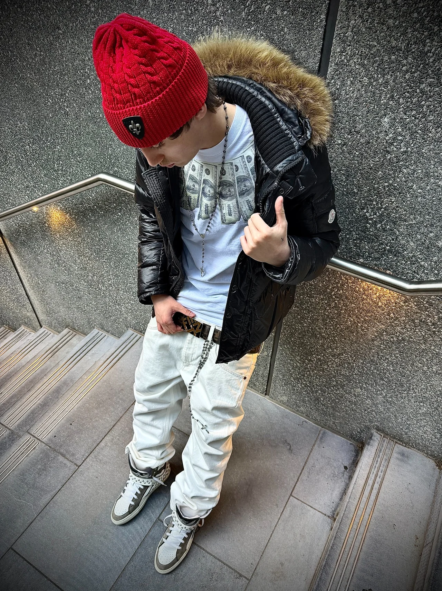
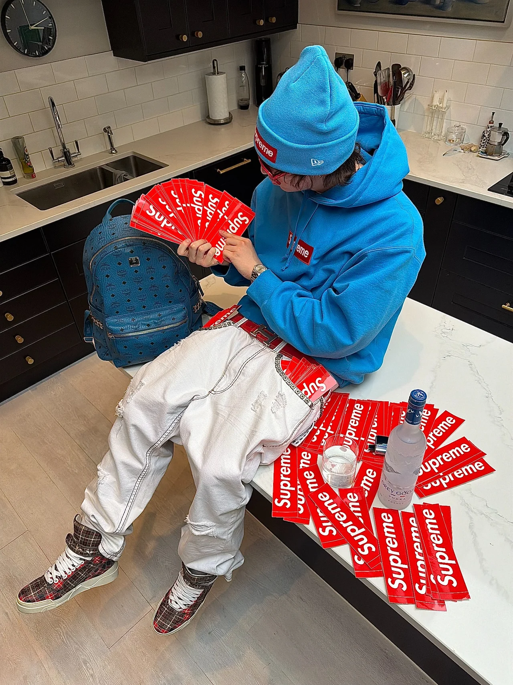
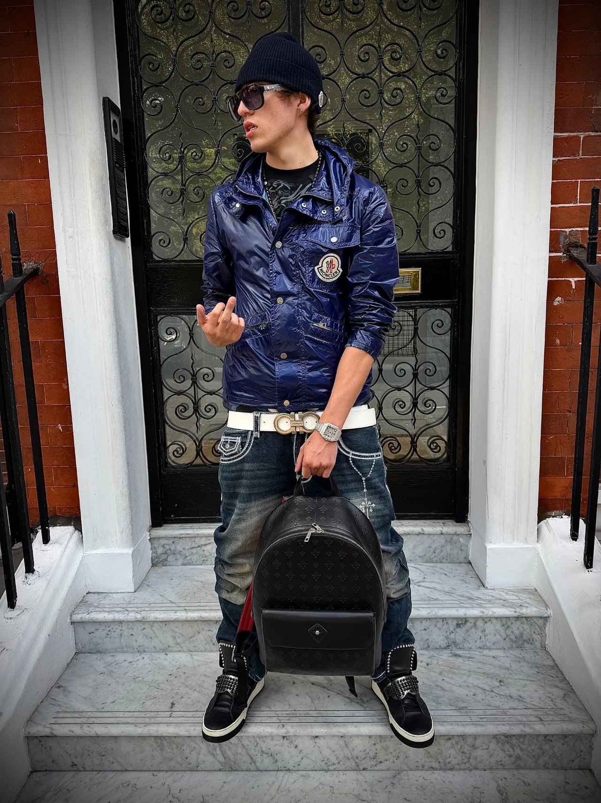
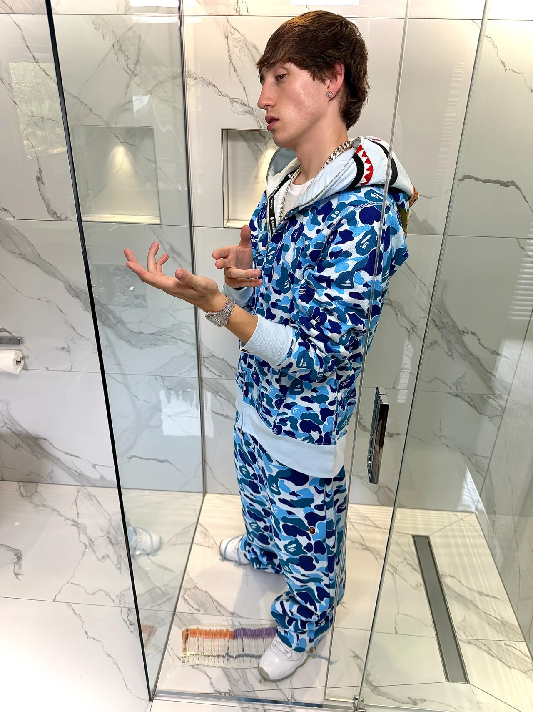
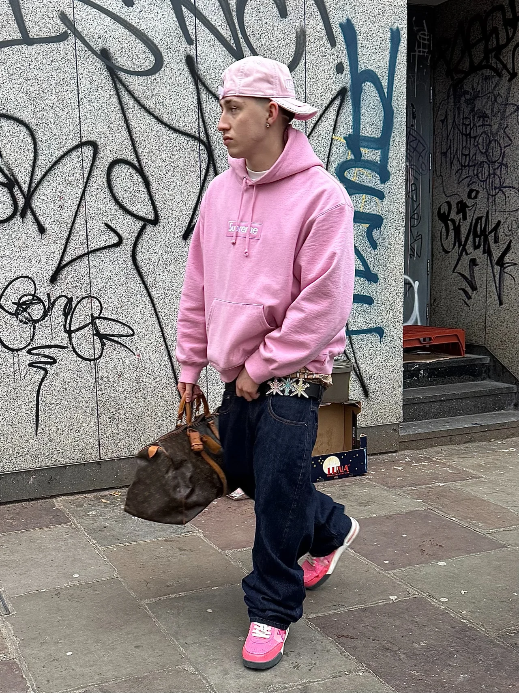

← Full roster
Fashion / Creator
TED
London based fashion creator with experience across styling, modelling, casting, marketing and creative direction. TED began working in the industry at 14 and has since built a broad understanding of fashion from both in front of and behind the camera.
Alongside building his own clothing brand, Track Mafia, he has increasingly focused on content creation and developing social concepts for brands.
Previous work includes Nike, JD, Umbro, Syna, Pastdown, Trapstar, Unknown London and Mertra.
27KFollowers
705K+90-day views
Profile
- 5′10″ height
- Small / Medium top
- Medium / Large bottoms
- UK 8 shoes
- 25K+ interactions / 90 days





Book TED
Start a
conversation.
Campaigns, partnerships, content and appearances.Send a brief ↗︎